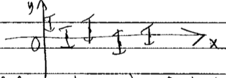
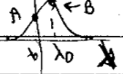

5.1. Lecture 14¶
Bayesian model selection (or model comparison)¶
The discussion here is based heavily on Sivia, Chapter 4 [SS06].
We’ve mostly focused so far on parameter estimatioin: given a model with parameters, what is the joint posterior for those parameters given some data. This is what we Bayesians mean by fitting the parameters, finding: \(p(\thetavec| D,I)\).
Now we turn to an analysis of the model itself, or, more precisely, to the comparison of models.
Remember this: model selection will always be about comparisons.
We can think of many possible situations (all given data):
Is the signal a Gaussian or Lorentzian line shape?
When fitting to data, what order polynomial is best?
Given two types of Hamiltonian, which is better?
In an effective field theory (EFT), which power counting (organization of Feynman diagrams) is favored?
In all cases, we are not asking about the best fit but which model is most suitable.
Note that if you consider the polynomial case, if you decided by how well polynomials fit the data, e.g., by finding the least residual, then higher order will always be better (or, at least equal, as you can set coefficients to zero as a special case).
The story of Dr. A and Prof. B¶
So let’s think how a Bayesian would proceed. As is usually the best strategy, we’ll start with the simplest possible example, dating back to Jeffreys (1939) \(\longrightarrow\) Gull (1988) \(\longrightarrow\) Sivia (2006) \(\longrightarrow\) TALENT (2019): The story of Dr. A and Prof. B. The basis setup is:
“Dr. A has a theory with no adjustable parameters. Prof. B also has a theory, but with an adjustable parameter \(\lambda\). Whose theory should we prefer on the basis of data \(D\)?”
For example, this could be data \(D\): 
Dr. A thinks \(y\equiv 0\). Prof. B thinks \(y=\lambda\), with \(\lambda\) to be determined.Our Bayesian approach is to consider a ratio of posteriors:
\[ \frac{p(A|D,I)}{p(B|D,I)} \]We emphasize: the denominator is not the probability density for a particular instance of \(B\), such as \(\lambda =0.2\), but the pdf that the theory is correct. \(\lambda\) doesn’t appear yet.
Let’s proceed with Bayes’ theorem:
\[\begin{split}\begin{align} \frac{p(A|D,I)}{p(B|D,I)} &= \frac{p(D|A,I)\,p(A|I)\,[p(D|I)]^{-1}} {p(D|B,I)\,p(B|I)\,[p(D|I)]^{-1}} \\ &= \frac{p(D|A,I)}{p(D|B,I)}\frac{p(A|I)}{p(B|I)} , \end{align}\end{split}\]where we have canceled the denominators in the ratio.
The ratio \(p(A|I)/p(B|I)\) might be given by our opinion of the two scientists based on the track records of their records. But it more typically taken to be 1 (i.e., before seeing data, no preference between the models).
Now \(p(D|A,I)\) would seem to be straightforward, but what do we do about the \(\lambda\) in \(B\)? Marginalize!
\[ p(D|B,I) = \int p(D,\lambda|B,I)d\lambda = \int p(D|\lambda,B,I) p(\lambda|B,I)\,d\lambda \]Now \(p(D|\lambda,B,I)\) is an ordinary likelihood and \(p(\lambda|B,I)\) is an ordinary prior for \(\lambda\).
But note that we are integrating over all \(\lambda\).
Let’s suppose a uniform prior for \(p(\lambda|B,I)\):
\[\begin{split} p(\lambda|B,I) = \begin{cases} \frac{1}{\lambda_{\text{max}}-\lambda_{\text{min}}} & \lambda_{\text{min}} \leq \lambda \leq \lambda_{\text{max}} \\ 0 & \mbox{otherwise} \end{cases} \end{split}\]Suppose also we can find \(\lambda_0\) that maximizes the likelihood \(p(D|\lambda,B,I)\). So we imagine a reasonable approximation to the situation is with a Gaussian:

Then, with \(\lambda_0\) the value at the peak of the likelihood,
\[ p(D |\lambda,B,I) \approx p(D|\lambda_0,B,I) e^{-(\lambda-\lambda_0)^2/2\delta\lambda^2} . \]Note that \(p(\lambda|B,I)\) is normalized with respect to \(\lambda\), but \(p(D|\lambda,B,I)\) is not because \(\lambda\) is to the right of the bar: \(p(D|\lambda_0,B,I)\) is not equal to \(1/\sqrt{2\pi\delta\Lambda^2}\) (in general).
Observe that the prior doesn’t depend on \(\lambda\), so pull it out of the integral:
\[\begin{split}\begin{align} p(D|B,I) &= \frac{1}{\lambda_{\text{max}}-\lambda_{\text{min}}} \int_{\lambda_{\text{min}}}^{\lambda_{\text{max}}} d\lambda\, p(D|\lambda,B,I) \\ &\approx \frac{1}{\lambda_{\text{max}}-\lambda_{\text{min}}} p(D|\lambda_0,B,I) \cdot \delta\lambda\sqrt{2\pi} \end{align}\end{split}\]To get the second (approximate) equality we took \(\lambda_{\text{max}} \rightarrow \infty\) and \(\lambda_{\text{min}} \rightarrow -\infty\). We make negligible error doing this, because the integrand dies off so fast.
The integral is then just a Gaussian, which yields \(\delta\lambda\sqrt{2\pi}\).
Now put this together:
\[ \frac{p(A|D,I)}{p(B|D,I)} = \overset{i)}{\underset{\text{a priori ratio}}{\frac{p(A|I)}{p(B|I)}}} \times \overset{ii)}{\underset{\text{likelihood ratio}}{\frac{p(D|A,I)}{p(D|\lambda_0,B,I)}}} \times \overset{iii)}{\underset{\text{"Ockham factor"}}{\frac{\lambda_{\text{max}}-\lambda_{\text{min}}}{\delta\lambda\sqrt{2\pi}}}} \]We have competing factors!
i) is the ratio of prior beliefs in the two theories. Usually this is taken to be unity.
ii) is the ratio of likelihoods. Because \(A\) is a special case of \(B\) (we say they are “nested”), the denominator will be at least as large as the numerator. 
iii) is the “Ockham factor” (or Occam in Latin). This serves to penalize \(B\) for the additional parameter because \(\lambda_{\text{max}}-\lambda_{\text{min}} > \delta\lambda \sqrt{2\pi}\) (usually).
This is a formalization of Occam’s razor: it is advantageous to add parameters as long as the gain in likelihood beats the cost in complexity.
The Ockham factor is the ratio of volumes before and after data is known. A greater collapse in volume with data means a greater penalty - cf. many parameters: full prior volume vs. effective likelihood volume.
The last term doesn’t always get interpreted so easily: think Gaussian vs. Lorentizian line shapes.
Jeffreys first worried about the prior: if the new parameter has infinite range, then isn’t the Ockham factor an infinite penalty? This is indeed an issue if there are no constraints on parameters.
A more reasonable case is the naturalness prior in mini-project I.
In most physical cases there are limits prescribed by some a priori knowledge.
What happens if the likelihood is wider than the prior? (Caution: re-evaluate the integral rather than using our formula.)
In Mini-project IIa: Model selection basics you will go on an exploration of evidence for a simple case and test your intuition.
{kind=link}
{kind=link}
Dr. A develops a more complex theory¶
Suppose Dr. A now has an adjustable parameter \(\mu\) in theory \(A\). We take the ratio again:
For simplicity, assume the same prior ranges and equal theories a priori, so we are left with:
 \[ \frac{p(A|D,I)}{p(B|D,I)} \approx \frac{p(D|A,I)}{p(D|\lambda_0,B,I)} \times \frac{\delta\mu}{\delta\lambda} \]
\[ \frac{p(A|D,I)}{p(B|D,I)} \approx \frac{p(D|A,I)}{p(D|\lambda_0,B,I)} \times \frac{\delta\mu}{\delta\lambda} \]If the data is good, the likelihood ratio is most likely to dominate. If the likelihoods are comparable, then the shape with the larger error bar for its parameter will be favored.
Why? Because in model selection, this means more parameter values are consistent with a good fit.
Finally, what if \(A\) and \(B\) are the same theory but with different prior ranges? Then
\[ \frac{p(A|D,I)}{p(B|D,I)} = \frac{\lambda_{\text{max}}-\lambda_{\text{min}}}{\mu_{\text{max}}-\mu_{\text{min}}} \]\(\Lra\) the preference is for a narrower prior range \(\Lra\) must have more insight to give a narrow range for the parameter.
Comparison to parameter estimation¶
In parameter estimation, Bayes’ theorem is
where we’ve made explicit that the model is \(B\) (typically this is subsumed into the information \(I\)).
The denominator is what we’ve been calculating for model selection!
This term is called the evidence for \(B\) or the marginal likelihood or the global likelihood or prior predictive. The word “marginal” indicates that one integrates over all parameters in the likelihood.
Parameter estimation focuses on the maximum of the likelihood (not exclusively, of course, for Bayesians!) while model selection calculates an average of it.
Evidence calculations: Laplace’s method¶
Suppose an unnormalized probability density \(P^*(\thetavec)\) has a peak at \(\thetavec_0\) (the \(*\) indicates it is unnormalized).
Let \(\thetavec\) be \(K\) dimensional. Then the evidence is
\[ Z_P = \int P^*(\thetavec)\, d^K\theta \]If we can expand \(\log P^*(\thetavec)\) around its peak (the linear term vanishes because it is a peak):
\[ \log P^*(\thetavec) = \log P^*(\thetavec_0) - \frac{1}{2}(\thetavec - \thetavec_0)^\intercal \Sigma^{-1}(\thetavec - \thetavec_0) \cdots \]where \(\Sigma^{-1} = H\) is the Hessian matrix:
\[ H_{ij} = -\left.\frac{\partial^2}{\partial\theta_i\partial\theta_j}\log P^*(\thetavec)\right|_{\thetavec=\thetavec_0} . \]This is a saddlepoint approximation.
Then we can truncate at this level to approximate the full series with the quadratic term (denoted by \(Q\)):
\[ Q^*(\thetavec) \equiv P^*(\thetavec_0) e^{\frac{1}{2}(\thetavec-\thetavec_0)^\intercal \Sigma^{-1} (\thetavec-\thetavec_0)} \]and approximate \(Z_P\) by Gaussian integration:
\[ Z_P \approx Z_Q = P^*(\thetavec_0) \sqrt{\frac{(2\pi)^K}{\det(\Sigma^{-1})}} . \]If \(P^*(\thetavec) = e^{-\frac{1}{2}\chi^2(\thetavec)}\) (so the prior is uniform) then
\[ Z_P \approx e^{-\frac{1}{2}\chi^2(\thetavec_0)} \sqrt{\frac{(4\pi)^K}{\det(\Sigma^{-1})}} , \]where the extra factor of 2 in the square root is from the 1/2 in \(\chi^2/2\).
Other approaches for the Bayes factor are discussed in Computing Bayes Factors.
Preview of mini-project IIa on model selection¶
The mini-project is Mini-project IIa: Model selection basics. Here we note some aspects; please refer to the notebook for details.
Consider that we have a non-polynomial function
Given data with errors, what polynomial is “best” to use to represent the function?
A higher-order polynomial will always reduce the sum of residuals.
Compare \(\chi^2/\)dof in least-squares fits to the use of Bayesian evidence ratios.
Using Laplace’s method here to calculate the evidence.
How do the results depend on the data? I.e., the number of data ponts, range of data, size of error bars.